商业产品需求的来源主要是客户需求分析、数据分析和竞品调研
商业产品需求从哪来
客户需求分析
商业产品也是产品，需求分析是基础，不能解决问题，更不用谈盈利
案例：福特汽车，一匹更快的马的故事
如何深度挖掘客户的潜在需求
分析对象：明确对应的分析对象，找到正确的人
购买“在行”开屏但未买脉脉，有询问但未下单的人
明确客户群体，才能收集到“对”的需求反馈
分析目标：有的放矢，需求可以多但不能散
针对性：开屏广告的需求
目标：找到提高开屏产品售卖率的方案
针对某个点来预设问题，进行需求收集和分析
思考角度：移情，站在客户的角度思考问题
是指用客户的语言来描述产品或需求
学会理解客户的身份和价值观，像客户一样去体验
感知他们的生活世界，从而理解客户显性需求背后的真正需求
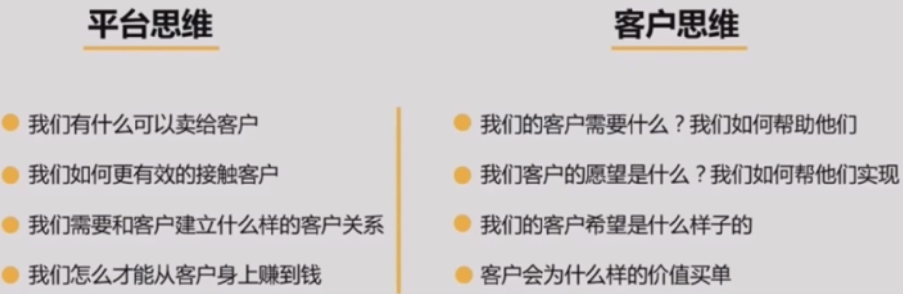
常用手段
问卷
常用于已经有相对成型的方案，切记主要设置为客观选择题
主要用以判断客户的满意度/接受度
可用于方案的优先级排序或者方案的N选一
电话
可针对某问题进行需求的深入挖掘
切记问题不要超过3个，整个时间不要超过30min
主要用以对不理解的需求进行深入了解或面谈无法实施时的折中方式
面谈
- 可进行开放式问答，常用于对预设问题没有答案/方案时使用，做大而全的需求收集
案例：婚纱摄影行业广告投放效果优化
确定调研目标
调研前确认好问题
有问题寻求答案：婚纱行业客户订单转化率低，按订单成本来考核成本消耗无法拉升，目前消耗表现低于预期；婚纱行业客单价高，用户决策路径相对较长，用户决策行为链中极少有看到不询单就下单
产品初步思考：是否将转化目标从线上订单转变为咨询
调研目标：了解婚纱行业客户的生意模式，结合线上推广找到对其效果优化的方法，进而拉升消耗
确定调研对象和方式
调研对象：业务中的婚纱行业客户、可以优先top消耗客户
调研方式：可以采用面谈的方式；产品没有肯定答案，希望从客户身上得到启示，开放式回答更合适
完成调研
开始访谈：开场准备有暖场、用尊称、数据准备
开始切题：好问题&坏问题，要引导客户多说，但说的是有方向性的
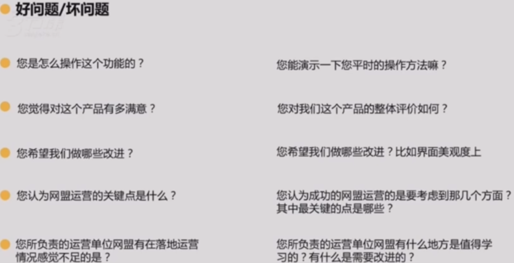
根据调研结果找问题分析
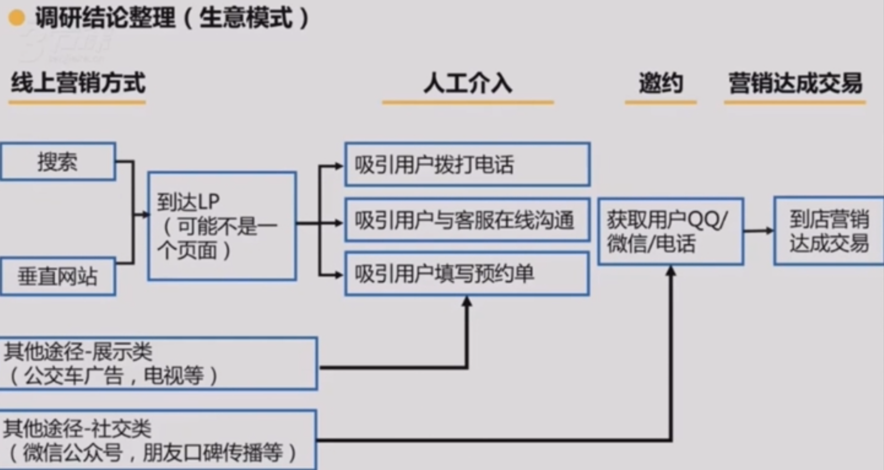
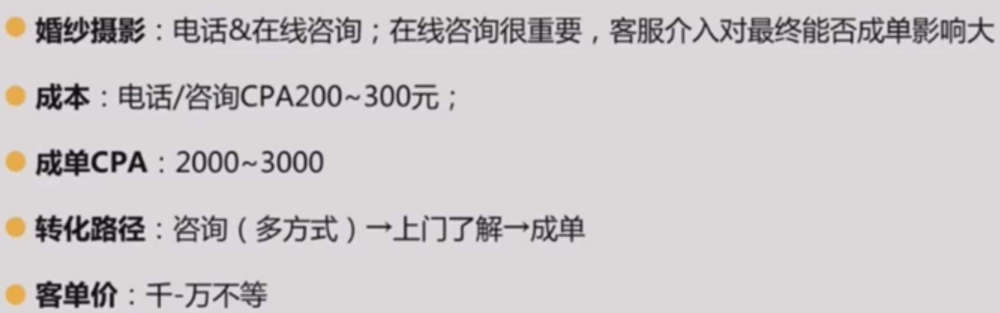
给出分析结论
添加到需求池
数据分析
商业产品和钱相关，数据是最能直接体现问题和空间的工具，帮助我们发现产品问题进行迭代
数据分析关键三要素
找准指标：好的数据指标可以用来指导行为
好的数据指标，具有简单性、可比较性，并与公司目标保持一致
会读指标：只有指标和数值无意义，需要参考值
和自己比：同比、环比看异常点、提升/下降幅度
跟业内经验值比：增长率、活跃用户数、客户获客成本
走出去看：业内平均水平、客户流失原因
指标拆解：确认唯一优化指标，并能拆解成组合次优化指标
确认主指标：明确当前阶段最有意义的指标，通过试验改善直到满意
确认计算公式：按计算逻辑进行拆分
多维度拆解：商业产品常从流量和客户两个维度入手
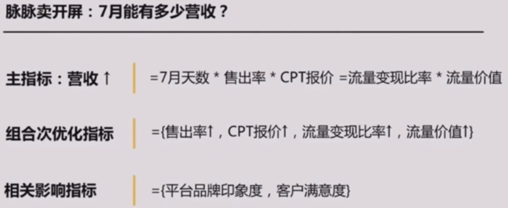
小结
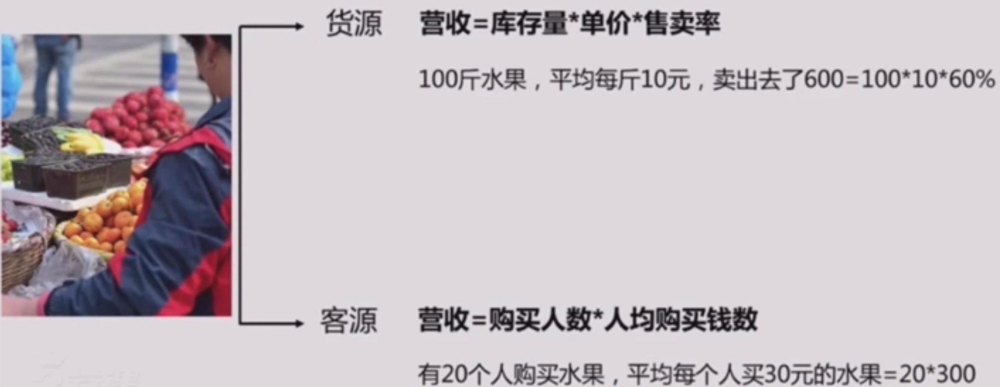
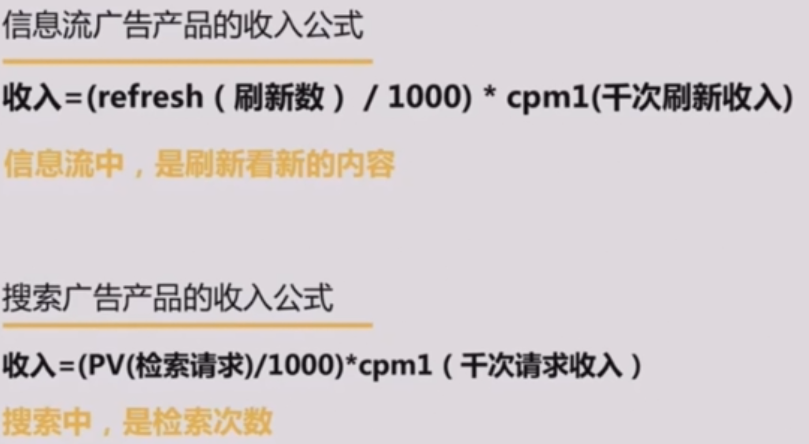
本质上相同 ，只是在信息流和搜索的场景下，用户看内容的方式不同产生不同的指标
从货源角度进行数据分析
step1：刷新一次看新内容，在文章内容中看到广告的广告总数
Refresh（刷新次数）
Asr（每次刷新有广告的概率）
Asn（每次刷新有广告的条数）
ad-show（广告曝光数=refreshasrasn）
step2：点击了广告，进入了广告详情页进行阅读了解
- ad-click（广告点击数=ad-show*ctr2）
step3：对广告内容感兴趣，填写了电话，留下了销售线索
- ad-action（转化数=ad-click*cvr）
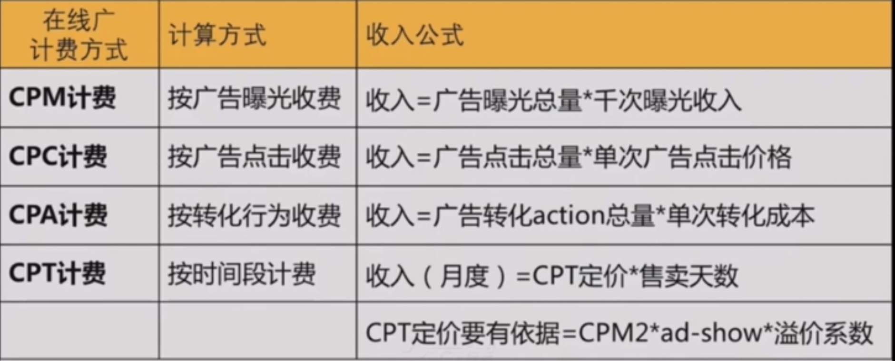
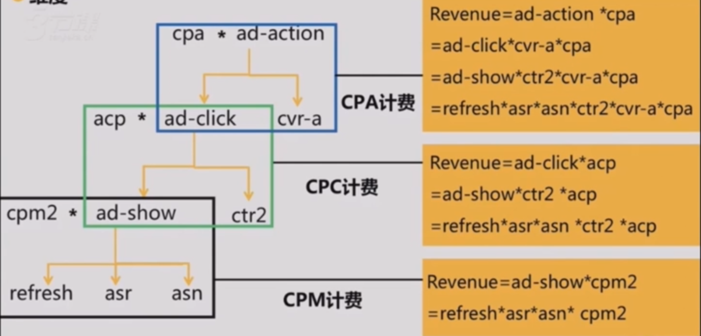
收费方式越靠近用户转化漏斗的下端，相关联的子指标越多
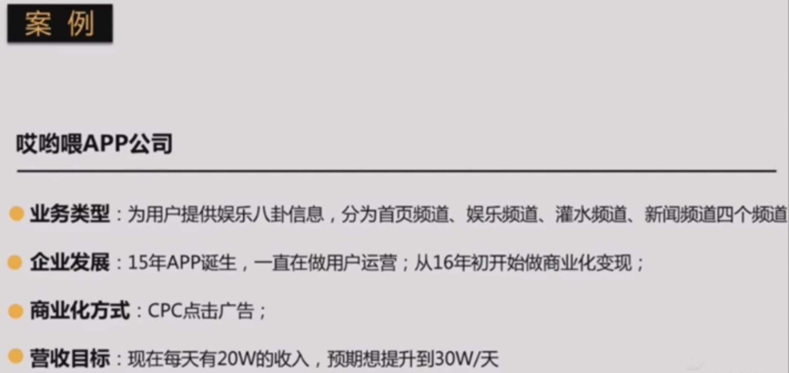
主指标：收入
目标：20W提升到30W
收入公式：revenue=refreshasrasnctr2acp（广告点击价值）
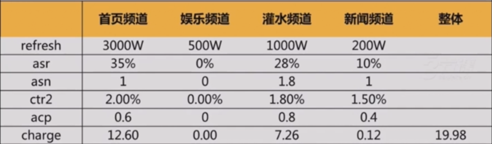
1、利用娱乐频道的500W refresh变现（asr 0%——33%；asn 0——1.6）
2、优化广告填充率，尤其是新闻频道
3、提升自然点击率，ctr2有优化空间
4、acp优化提升，除灌水频道
从客源角度进行多维度市场细分
不管什么样的计费方式，从客源角度均是
revenue=usernum*arpu
需要注意的是市场细分方式的不同，数据分析的维度也略有差异
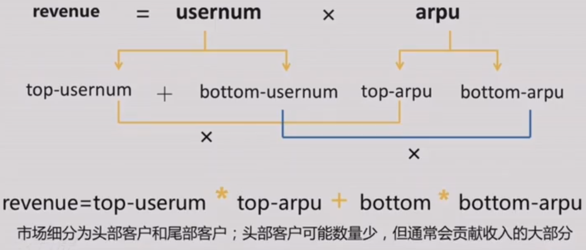
市场细分：
可分为新户、老户、流失客户
新户数>=流失客户数，保持客源总数是正增长
两个相关指标：
（某周期内的）留存率 = old-usernum / usernum
（某周期内的）流失率 = churn-usernum / usernum
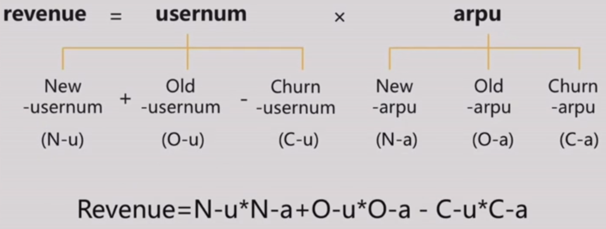
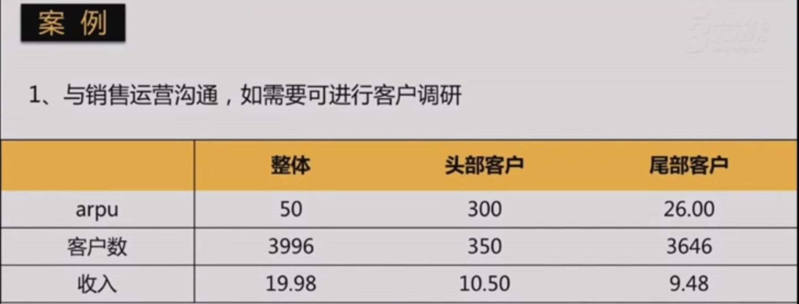
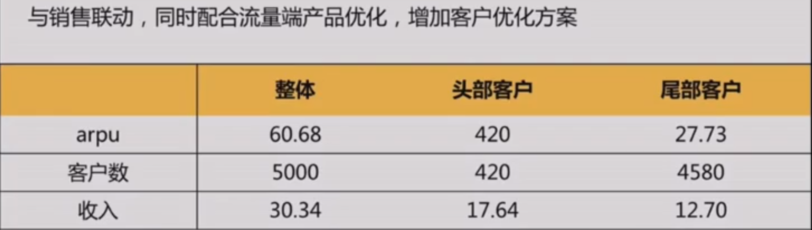
小结
我们在数据分析时，可以从货源和客源两个维度拆分分析，但这两个维度的数据指标是共存、相互影响的
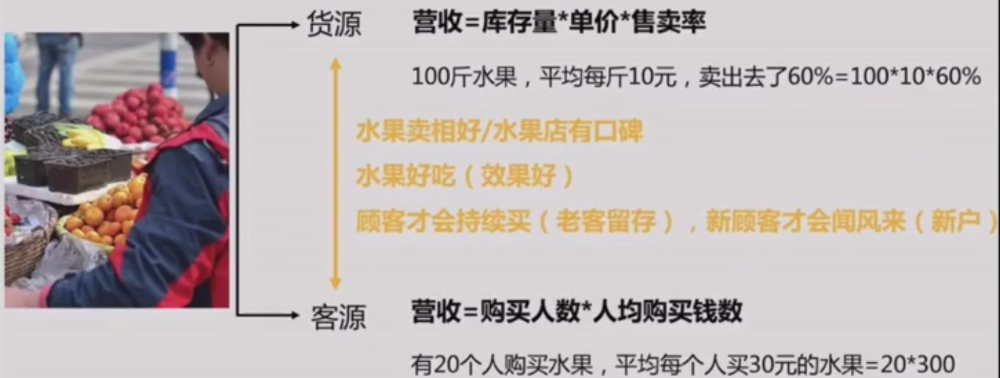
客户能赚到钱，媒体平台才能赚更多的钱，双赢
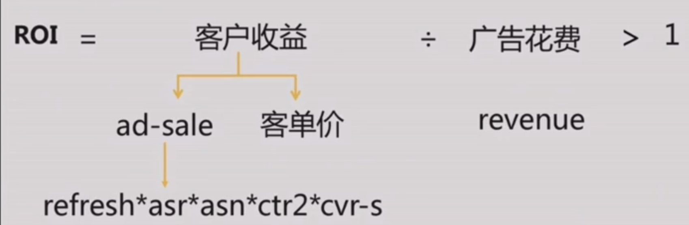
数据分析实战
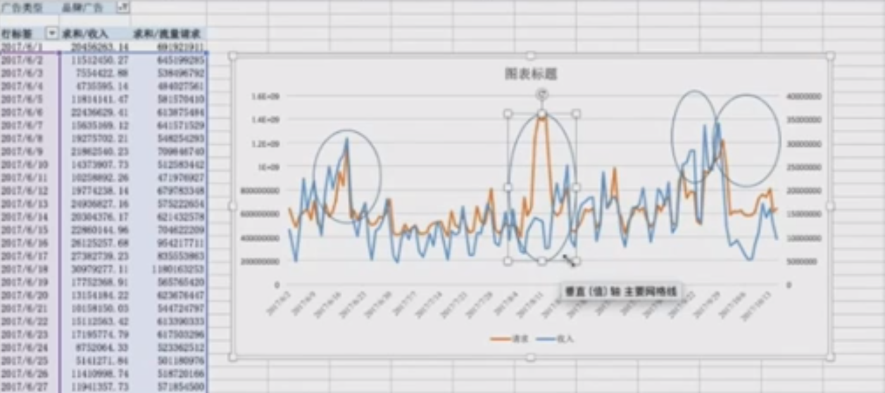
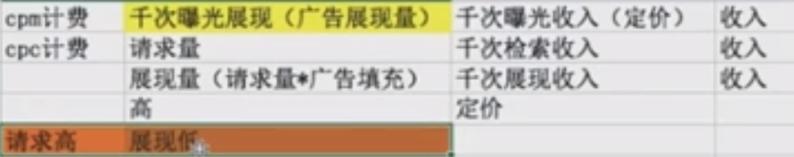
竞品调研
竞品分析三要素
目的：选择分析目标
手段：若干维度对比分析
结果：讨论和提出解决思路
竞品分析四个问题
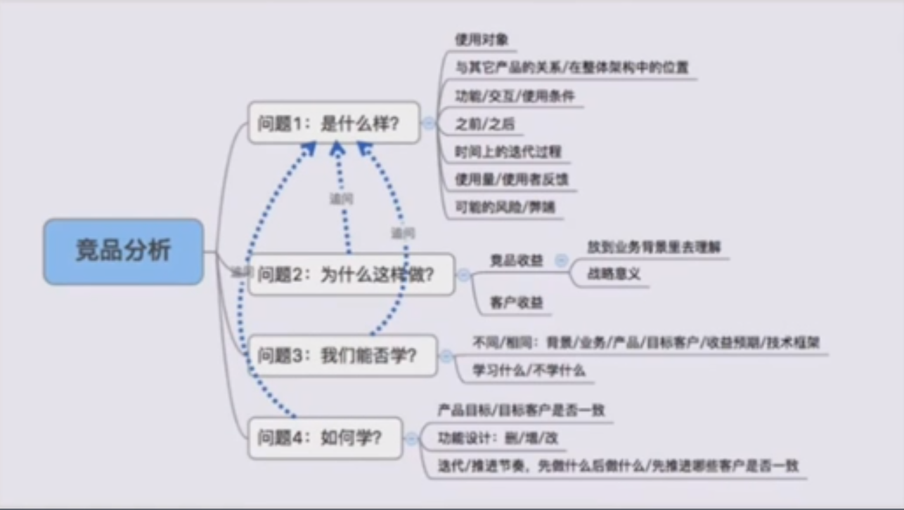
对于一家做信息流广告业务的公司，标榜的是Facebook，所以Facebook的产品更新状态要时时关注
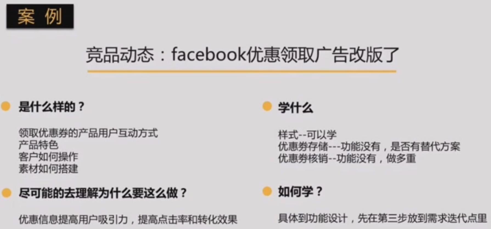
调研步骤
为什么做调研——充分了解调研的背景和目的
得到什么结论——梳理出最后需要产出的结论
列大纲——需要哪些方面的资料
都有什么逻辑——通过数据或者资料，推导相关导论
对后续的指导——这些结论对后续工作的启发和影响
撰写调研报告——简洁&论据充分地向大家阐述，口头或者报告的形式
商业/用户产品竞品分析的异同
商业产品的竞品分析和用户竞品分析基本是相同的，值得强调的是，商业产品的竞品分析要试图拿到客户视角的产品体验，所以手段上略有差异，可利用联系竞品销售部门沟通或开竞品账户体验的方式来获取信息
总结
采集需求——理解需求——产品需求表